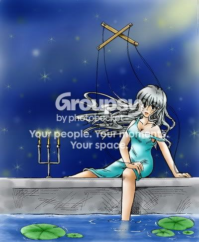
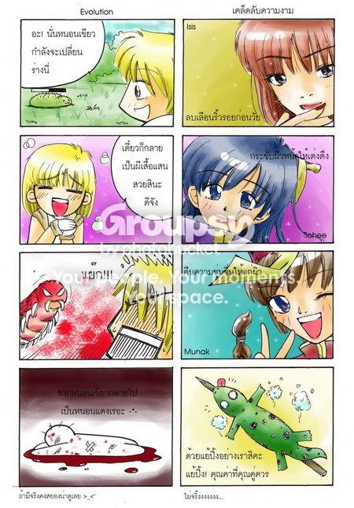
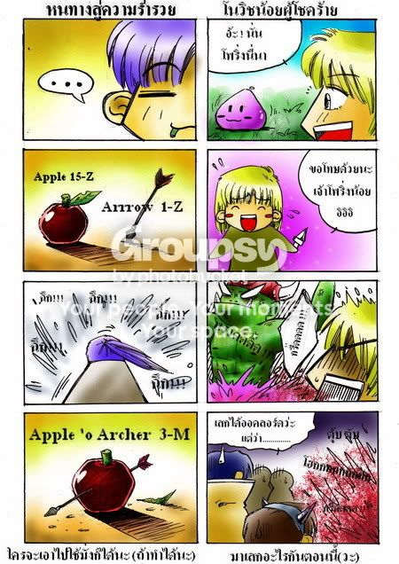
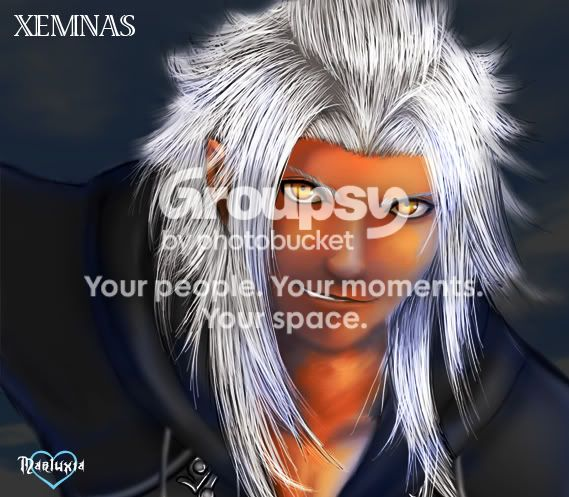

ภาพขาว - ดำรูปที่ 3 เสียดายตรงมือข้างที่ไม่ได้ถืออาวุธอะครับ ถือว่าเป็นท่าที่ทรมาน...
รูปสุดท้ายผู้สาวนุ่งสั้นมากครับ ก้มไม่ได้เลย
แจ่มครับ !!
http://eco.froztic.in.th/archive/ecofanclub/
http://eco.froztic.in.th/archive/ecofanclub/viewtopic.php?f=21&t=1294




